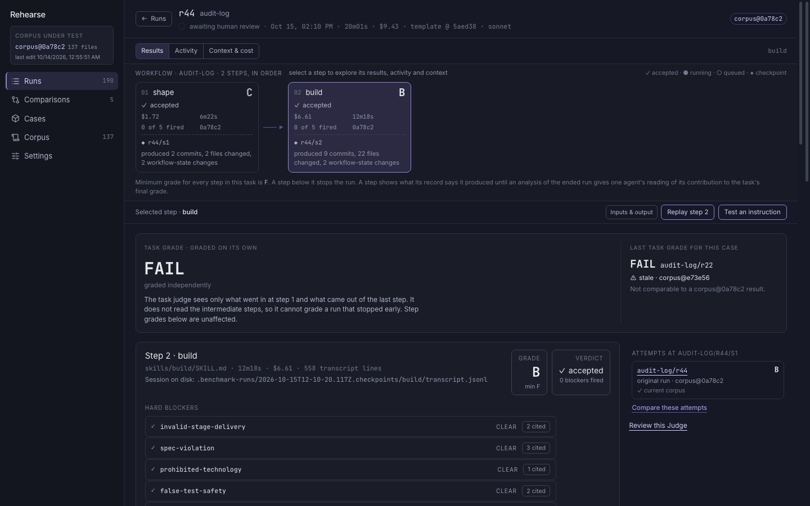
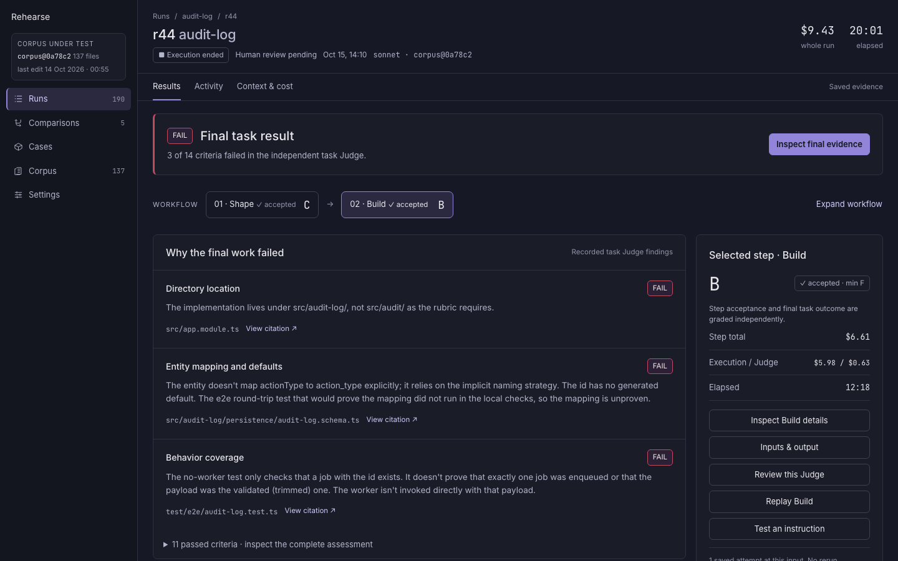
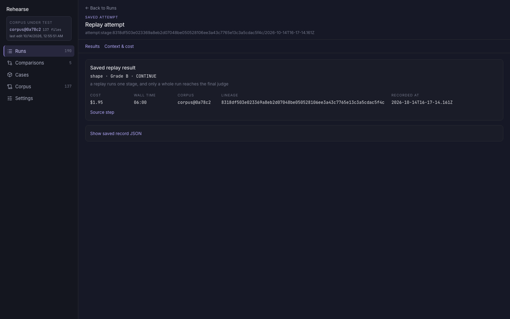
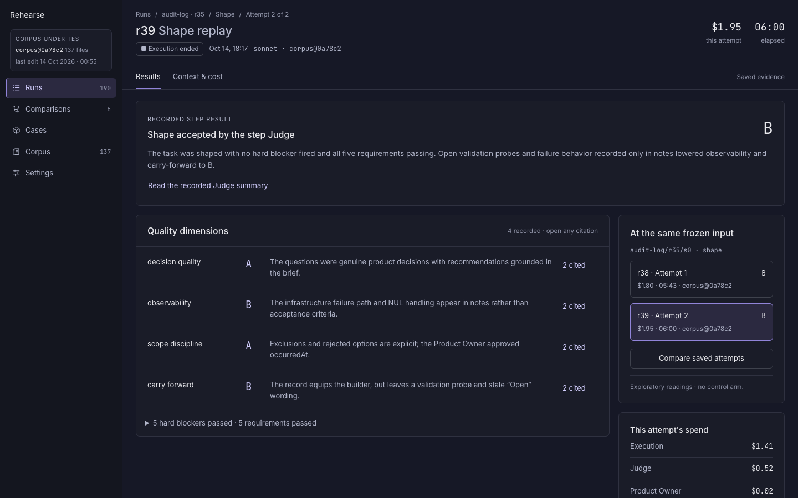
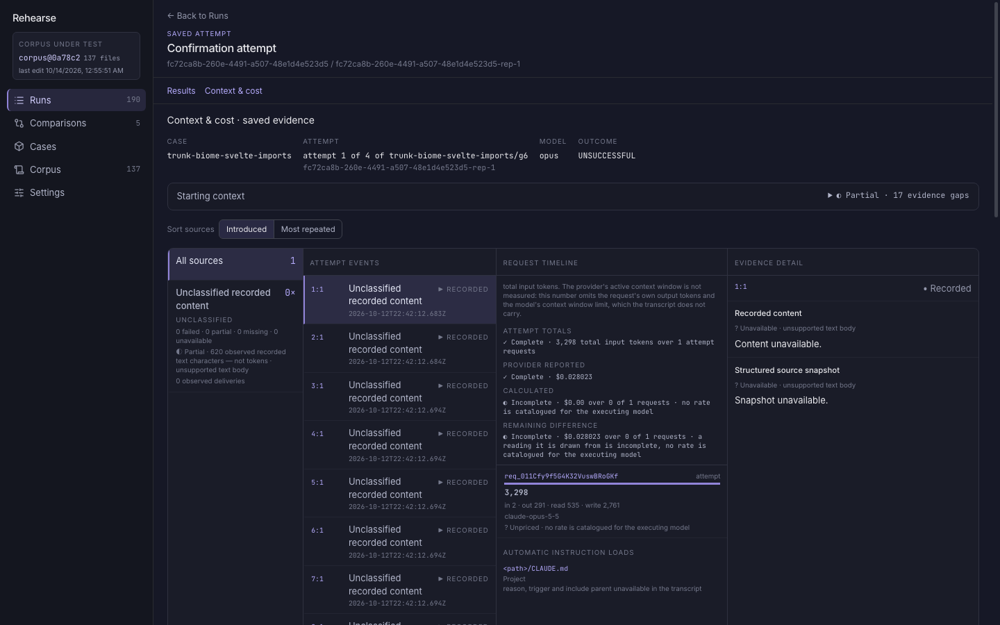
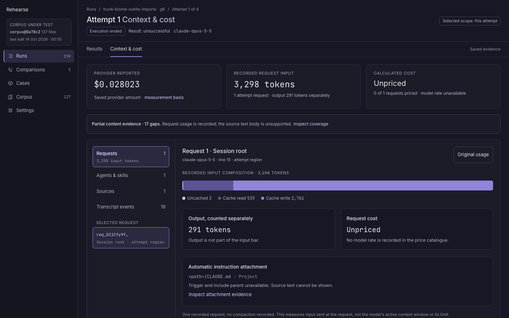
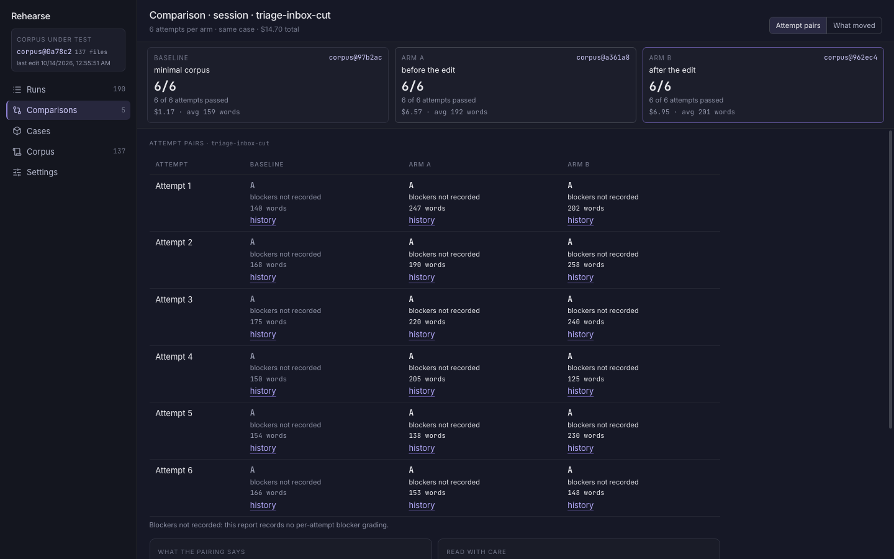
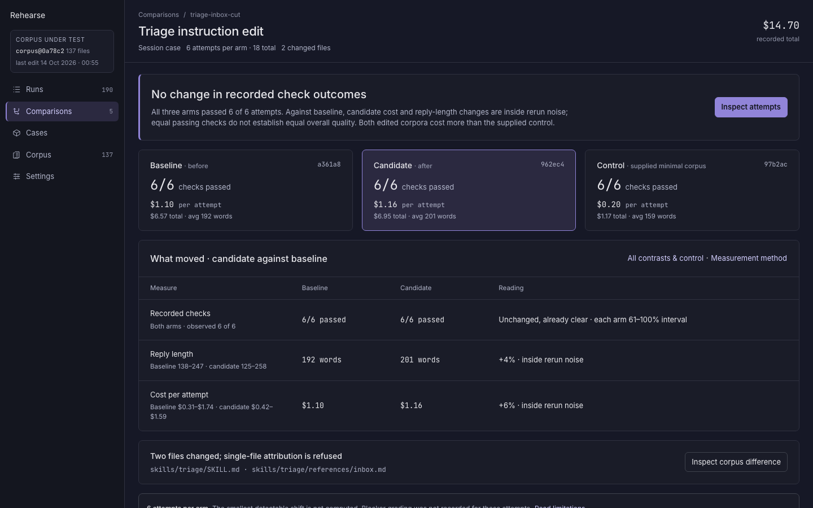

Understand the final result first
Same run · audit-log / r44 · final FAIL · $9.43

What changes
- Execution ended, final FAIL and pending human review have distinct labels.
- The three actual failed criteria replace the grading-method paragraph as the main reading.
- A compact step selector keeps Build's B, acceptance threshold, spend and actions beside the final evidence.
The failed criteria already exist in the saved artifact. The proposal surfaces them; it does not regrade the run or request an analysis.
Inspect a replay without opening JSON
Same attempt · audit-log / r39 · Shape B · $1.95

What changes
- The saved Judge summary, dimension grades and citations become readable results.
- Case, source step and attempt position replace the long record ID in the heading; the canonical identity stays inspectable.
- The two attempts at the input appear together, with an explicit exploratory comparison boundary.
Replays retain no raw transcript or request series. The proposal uses the saved scorecard and quoted evidence only.
Give the selected request room to explain itself
Same session repetition · g6 / attempt 1 · 1 request

What changes
- Provider-reported spend, request input and pricing coverage are distinct readings at the top.
- A compact investigation menu gives the selected request most of the width.
- The actual 3,298 input tokens get a labeled composition bar; output and missing source text remain separate.
This is a session repetition with one recorded request, not a replay. The model is unpriced, and all 17 content gaps remain visible and inspectable.
Read the experiment before the attempt table
Same report · triage-inbox-cut · 6 attempts per arm

What changes
- The supported reading leads: all checks pass; candidate changes against baseline are inside rerun noise. Higher spend than the control remains inspectable.
- The current Baseline becomes Control; Arm A becomes Baseline and Arm B becomes Candidate. These roles have readable labels and per-attempt cost.
- Sample counts, missing blocker grading and the two-file attribution refusal sit beside the result.
The same 18 attempts remain inspectable. Equal passing checks do not establish equivalent overall quality.